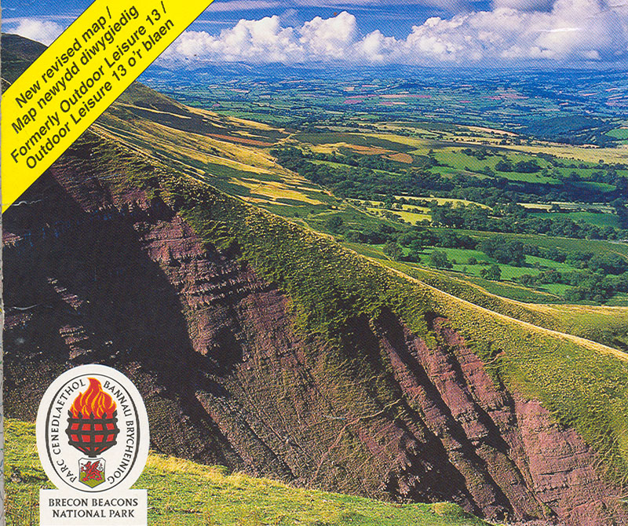
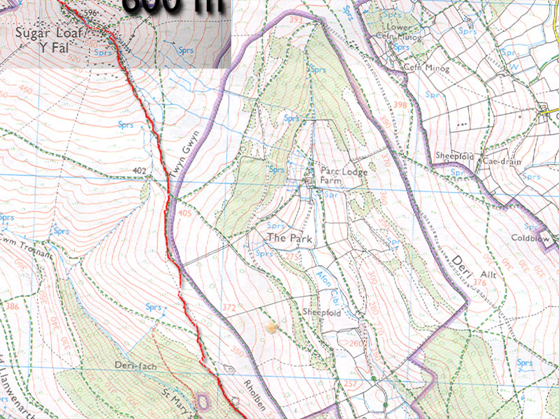
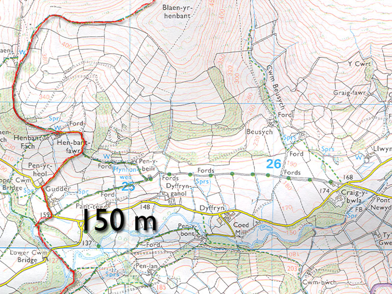
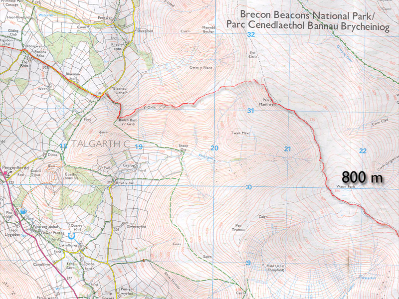
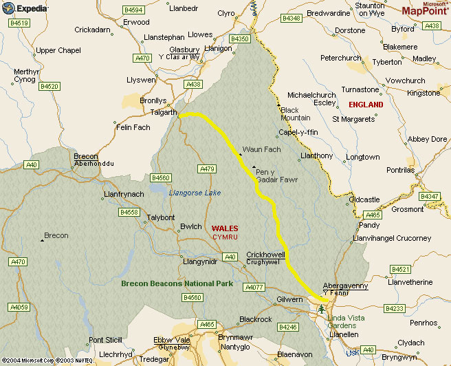

The Brecon Beacons, Wales
Northern Traverse
August, 2004
</center>
Kris and I went on a short “get away from it all” vacation to Scotland and England. We had a great time, going to restaurants, movies, and a very minimal set of tourist attractions and museums. I did get to do some hiking when Kris found a pamphlet that mentioned you could take a train to Wales from London in two hours. The stores were closed that night, but I was able to call and confirm a ticket, and set the alarm for 5 am the next morning. I didn’t have any hiking gear, and the weather wasn’t great, but it would probably be fun!
Kris got up with me, as she was taking a field trip to Nottingham, and we could take the Underground to our train stations together. At 6 months pregnant, she wasn’t keen on an all-day hike!
On the second train, I was lucky enough to sit next to a woman named Fiona, who grew up in Abergavenny (my destination), and was a keen hiker. She very kindly walked me to the tourist information office which was opening at that moment (9 am). In the office, a nice woman helped me negotiate a good hike. There were some adventurous ideas, but most of them required an hour wait for a bus ride and then more travel on roads. The best hope was to hike up Y Fal (Mountain) behind the town, and make some kind of short loop in the Beacons, coming back to Abergavenny another way. With map in hand, I set off for some water, two candy bars, and an umbrella. Heading out of the picturesque town, I entered residential streets then a one-lane track with hedges 10 feet high on each side. Eventually trail set off from the track and I was hiking for real.
It was fascinating to travel through a forest where the people had chopped limbs on trees so often that the trees splayed out in large branches straight from the ground. I stopped to put on contact lenses at an old wooden post. Strange bugs emerged from the post and crawled around. I hiked through dripping brush into a gray cloud.
Gradually the forest opened into brushy fern slopes. Suddenly an expansive view of rolling hills and sheep was before me. A rutted lane led me towards the summit of Y Fal (also known as Sugarloaf Mountain). I scrambled on some old looking rocks at the summit, and wished the clouds would part. All of a sudden they did part in the north, and a fascinating glimpse of “The Shire” made me determined to go there.
Green or golden fields marched high up a broad hillside, conveying a sense of rest and order.
Looking at my map, I conceived a plan to hike northwest to those fields, then climb north onto a high spine of the Black Mountains. Too lazy to unfold the map in wind and light rain, I decided that if I kept heading north I’d reach Talgarth where I could take a taxi back to Abergavenny. I had a quart of water and a candy bar, how far can it be?
Three girls wandered up to the summit from the east, and I struck off down their path. Apparently, Catholic masses were held from this summit hundreds of years ago. I hoped to leave the western path and travel north, where a small footbridge forded a stream (at least on the map). So as my trail bent west and south, I struck off across fields, a little unsure if it was legal to do so. I came to a house and crept through a field to the side, trying to pass quietly. I was actually in a national park, but in Wales a national park doesn’t mean an area without habitation. It actually seems the opposite, like it is preserving a rural way of life.
After descending about 1500 feet, I met two other Americans who were hiking up, having given up on finding the river trail I was looking for. Twenty minutes later, I was thrashing around in brambles by the stream, eventually finding the trail and being startled by sheep standing above the river on a small cliff. Just as I was about to take off my shoes and wade across, I found the footbridge (near the Lower Cwm Bridge), and gained more confidence in the map!
Now I could start heading back up. I took a pleasant road that wound steeply up the hill that looked so gentle from Y Fal. A TV cable repairman was out here, and we exchanged a greeting. The sun came out, and the warmth dried my clothing. The air was clean.
The road ended, and I hiked up Blaen-yr-henbant among many sheep. Many, many, many sheep. I had to laugh at myself thinking earlier that I would drink from streams. That would be pretty dangerous here I think! Sometimes there wasn’t a square inch without sheep dung, seemingly for miles. Later, I was told that all the sheep here were killed during the Hoof and Mouth outbreak. It’s amazing they can bounce back in number so quickly?
The most spectacular scenary was in this area of the walk. Great circs and cwms arced across the horizon. Green with gray stone under a yellow sun. Shadows from black clouds ahead of me glid across the northern marches, and the wind blew. To my right was a ridge called Offa’s Dyke Path. It marked a boundary of a long ago pre-Christian king. Stone walls reminded me that people had lived and worked here for hundreds of years. As I climbed on the ridge, the view to either side just got better and better, and Y Fal receded into the distance behind me. On the other side of a cloudswept summit was my destination - who knows how far?
Okay I’d better figure it out, before it starts raining again. Unfolding the map was difficult in the strong wind, especially as it was about 5 feet long, and the ground is covered in sheep dung that I didn’t want to introduce to my map. I did this to discover I still had many miles to go - 10 miles? Well, I didn’t want to go back, so I kept marching.
The umbrella started to come in handy. As I approached a summit, the rain began driving horizontally from the southwest. I could keep my upper body dry and warm by holding the umbrella like a shield. After what seemed like a long time, I reached a broad and windy crest. My last look at Y Fal was through a scrim of cloud and then it was gone.
The weather improved a bit away from the high point, though I had miles to walk north. Increasingly puddles became a fact of life, and soon they were ponds that required jumps or long detours. At one point, the trail took me into a small forest where the path was extremely overgrown. Bent double beneath limbs, I made a comical appearance trying to jump over 4 foot ponds. As I exited the forest, there was a sheet of blue plastic over what looked like a body. Apprehensively, I lifted the plastic to find insects and trash. I didn’t mind leaving that area.
Back on the high moor, I reveled in the new scenery even as my soaking feet felt bruised and blistered. Another hour of gentle travel brought me to Waun Fach, and a view of Talgarth below. A pilot in a glider plane flew overhead and the sun broke through the clouds again. Finally, I saw a large party on a knoll 1/2 mile distant. Ah, maybe they can give me a ride into town, I thought!
Coming down from a summit, I slipped on a mudpatch and slid unhappily through black mud and sheep dung for 15 feet to a puddle. “There goes any ride in a car,” I thought ruefully, squelching across the moor and getting out my umbrella again for rain.
It took a long while to reach the knoll, and the people were little dots bounding down a ridge leading west. My now sodden map indicated this way would get me down effectively so I followed the path. Pretty soon I was enjoying the scenery again, as the sun came out and the ridge at Y Grib became pleasantly knife-edged. Halfway down, I caught up to the party of holiday-makers, on a week-long walking tour of the countryside. People did seem to find it funny that I would come from London just for a day of hiking, but I guess that is the “American Pattern.” They weren’t taking a car into Talgarth so I’d have to walk or hitchhike the several miles into town. Eventually I zoomed ahead and they followed a trail that bent south to a ruined castle.
I chatted with a couple while hiking down a steep meadow near Bwich Bach a’r Grib, then suddenly I was on a one-lane track again. Well, it’s another 2-3 miles to town, move your aching feet I said to myself! I took shortcuts through fields where there were markers indicating a hiking path. At one point I nearly got lost in a copse of young trees where the trail faded to nothing. After this, I stayed on the road the rest of the way at the next opportunity. The hedges seemed even higher here, and if a car came along too fast I nearly panicked because I couldn’t climb up out of the sunken road! Very strange.
Did I say my feet hurt yet? Covered in sheep dung, wearing wet cotton socks, sporting black stains of mud on my backside, I was pretty eager to begin the journey home! After a few miles I arrived and went right into the tiny town bar for a Guiness. After some confusion, I was able to call a taxi willing to drive me back to Abergavenny. I finished my beer, answering some questions from the close-knit little group in the bar, and went across the street for fish and chips. “The taxi driver, was it a woman?” said the owner as he cooked my meal.
“Yes she was.”
“Ah, she’s Irish,” he said.
What a small town!
He was a really nice guy, we talked about prices and stuff. Outside, I ate and talked with two boys keen to hear about my hike. One of them was hungry so I shared my chips, waited for the taxi and seemed to be the object of a lot of stares. I felt like the community was sizing up the curious muddy stranger! The taxi arrived, with Irish driver, and I said goodbye to the kids.
It was neat to see how long the drive was to get back to the start of my walk. Again prices were the topic. I told her how much a cab driver in Edinburgh made last year (50K pounds I think), and she was amazed, then quiet - perhaps thinking of moving there.
Back at the Abergavenny train station, I learned that a suicide had occurred on the train tracks to the north, and the train would be so delayed that I would miss an important connection. So I hired another taxi to drive me to the station at Newport. He was born in the area and loved living there, though money was scarce.
In Newport, another delay meant I had more hours to kill. I went to a depressing bar and had another beer. It’s hard to have fun with wet, dung-covered feet! When I finally got on the train, I scavanged newspapers and made myself “newspaper socks” to keep my feet dry and protected from the wet shoes. It was a great idea. I think we threw the cotton socks away later, as the mud/dung combination never came out!
Back in London, the Underground had closed, so the train service hired a taxi for the 10 of us that were stranded. It was very organized, we divided up into 3 taxis based on neighborhood. So with all that, I finally got home at 1 am: it would have been 8 pm or so, without all the train troubles. Sigh. If I promise Kris to be back for dinner, and actually don’t get delayed by the mountains, society will thrust something up for me!
This was a really fun adventure, I’d love to do more hiking in the area - and the rock climbing looks great too.
Postscript: I was telling Theron about this hike at a Pizza Hut in Chilliwack, British Columbia in September. Amazingly, the family at the booth next to us were immigrants from Abergavenny! They moved away from there some 10 years before. The father had even done the hike I did. Jeez, what a small world.
|
 Typical scenery of the hike, from a map photo. |
|
 A map of the first miles. |
|
 A river crossing north of Y Fal. |
|
 Descending to Talgarth. |
|
 An Expedia map showing the Brecon Beacons park. |
{kind=link}
{kind=link}
{kind=link}
{kind=link}
{kind=link}